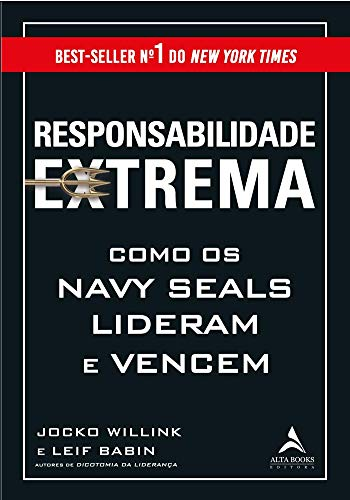
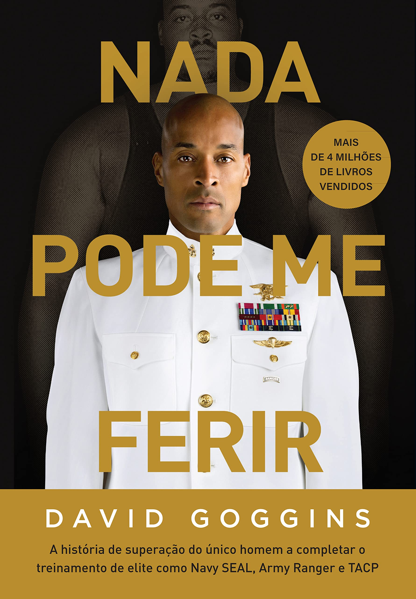
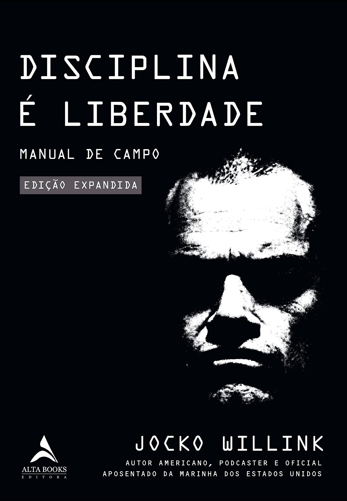
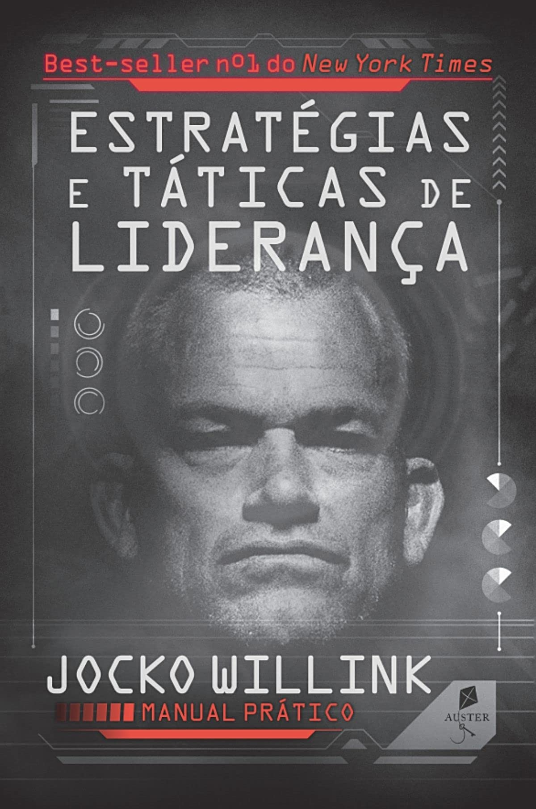
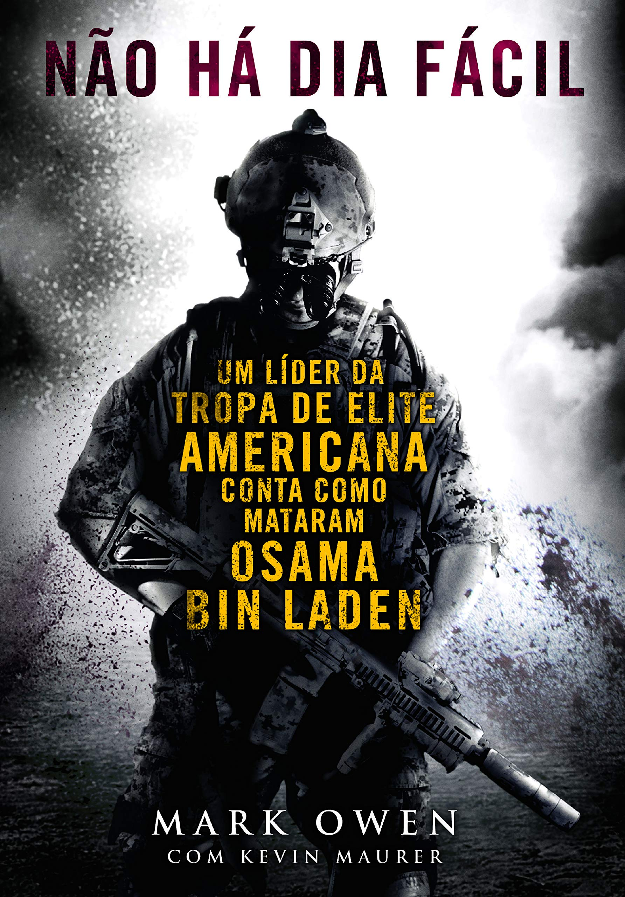

Responsabilidade extrema: Como os Navy Seals lideram e vencem
Dois oficiais SEAL da Marinha dos EUA, que lideraram a unidade de operações
especiais mais condecorada da Guerra do Iraque, demonstram como os poderosos
princípios de liderança SEAL se aplicam aos negócios e à vida.
Enviada para o campo de batalha mais violento e perigoso do Iraque, a unidade
de tarefas SEAL de Jocko Willink e Leif Babin enfrentou uma missão quase
impossível: ajudar as forças dos EUA a protegerem Ramadi, uma cidade
“perdida”. Em relatos em primeira mão de heroísmo, perdas trágicas e
vitórias conquistadas a duras penas, eles aprenderam que a liderança ―
em todos os níveis ― é o principal fator para o sucesso ou o fracasso
de uma equipe. Willink e Babin retornaram dessa mobilização e instituíram
o treinamento de liderança que criou a próxima geração de líderes SEAL.

Nada pode me ferir
Mais de 4 milhões de livros vendidos.
A história de superação do único homem a completar o treinamento das forças
de elite e se tornar Navy SEAL, Army Ranger e TACP.
“Tudo na vida é um jogo mental! Sempre que somos tragados pelos dramas da vida,
tanto os grandes quanto os pequenos, esquecemos que, por pior que a dor se
torne, tudo que é ruim tem um fim.” – David Goggins

Disciplina É Liberdade: Manual do Campo
Muitos livros aconselham como superar obstáculos e alcançar seus objetivos,
mas tal conselho costuma omitir o ingrediente mais crítico: a disciplina.
Disciplina é liberdade, descubra seu desejo. Os métodos de Jocko Willink
para o sucesso nasceram nas equipes SEAL da marinha norte-americana, onde
passou grande parte de sua vida adulta, alistando-se depois de sair do
ensino médio e subindo na hierarquia até se tornar comandante das operações
especiais com as mais altas condecorações na Guerra do Iraque.

Estratégias e Táticas de Liderança
Aprenda a gerar confiança. Aprenda a ser decisivo. Aprenda a controlar suas
emoções. Aprenda a dizer a verdade. Aprenda a ser equilibrado. Aprenda estratégias
e táticas. Aprenda a Liderar. O objetivo da liderança parece simples: levar as
pessoas a fazer o que precisam para apoiar a missão e a equipe. Como, porém,
você alcança esse objetivo? Como se torna um verdadeiro líder? Como gera
confiança em seus superiores e subordinados? Em caso de promoção, como lida com
seus antigos colegas? É possível ser um líder sem as características naturais
necessárias para a liderança? a liderança é um trabalho de equipe. Sem coordenação
e cooperação entre os indivíduos e entre as equipes, tudo está perdido. Para se
tornar um verdadeiro líder, não é suficiente conhecer apenas a teoria, mas é
preciso adquirir também a capacidade de traduzi-la rapidamente em estratégia
aplicável, para logo colocar a liderança em ação em um nível tático.

Não há dia fácil
Não há dia fácil é um retrato da vida nas equipes do Seal e o único relato interno
sobre a Operação Lança de Netuno, realizada em 1o. de maio de 2011, que resultou
na morte do terrorista Osama bin Laden.
Desde a pane no helicóptero Black Hawk - que quase fez com que a missão fosse
abortada - até o comunicado pelo rádio via satélite confirmando que o alvo estava
morto, a operação dos vinte e quatro homens na propriedade secreta de Bin Laden
é recontada em mínimos detalhes.

Morto ou vivo
Tom Clancy retorna para lembrar os leitores por que ele é o mestre reconhecido de intriga
internacional e ação militar sem parar.
É o Campus. Secretamente, criado sob a administração do presidente Jack Ryan, o seu único
objetivo é eliminar os terroristas e aqueles que os protegem. Oficialmente, ele não tem
nenhuma ligação com o governo americano, uma necessidade em um momento em que os
detentores do poder consideram-se acima de ideais como lealdade, justiça e certo
ou errado.